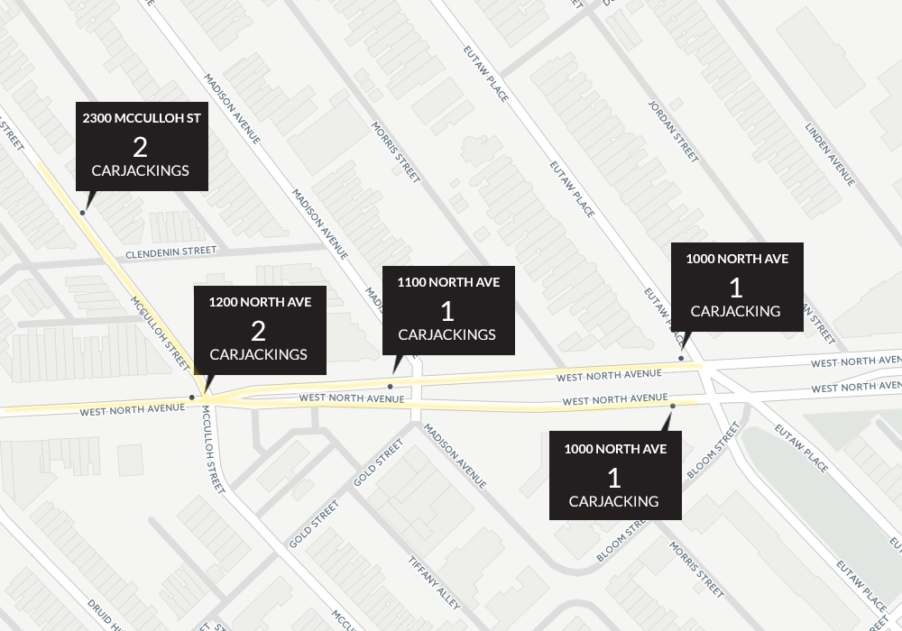
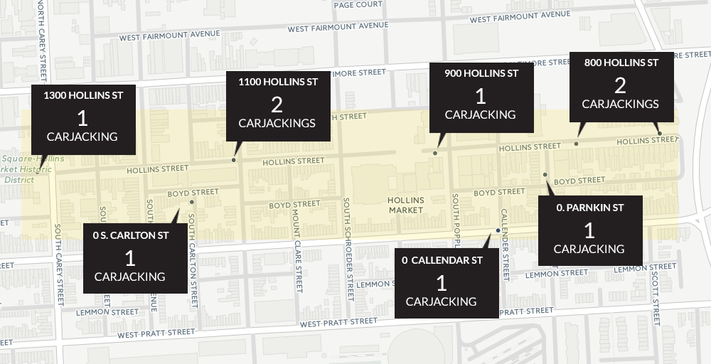
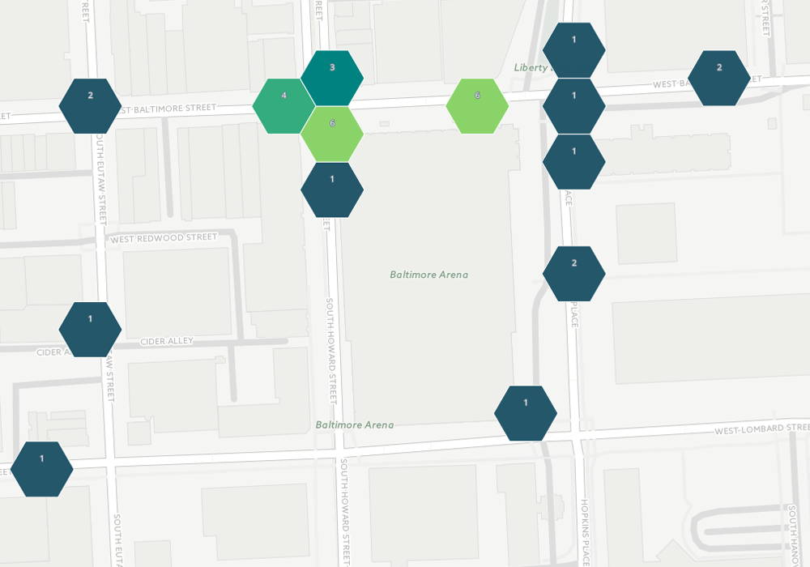
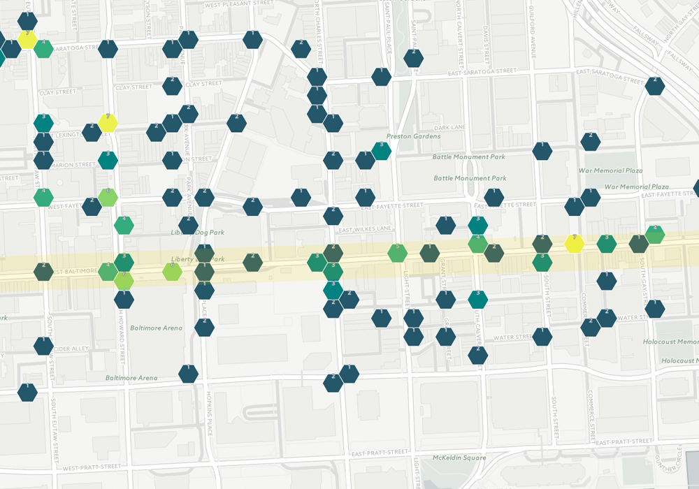
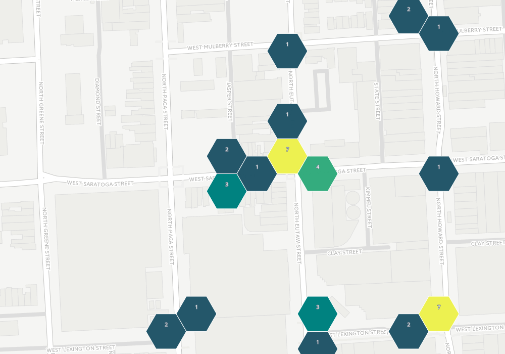

Baltimore has seen a substantial rise in robberies in 2016. Carjackings are up 38% across the city while Baltimore’s downtown neighborhood has seen a 63% jump in street robberies. And things only seem to be getting worse-- October was the worst month for carjackings in the city and November saw the highest number of street robberies.
While much of the city and local media have focused on high homicide numbers, Baltimore has seen a 7% rise in total robberies in 2016. Data from Open Baltimore shows that robberies have risen from 4,717 total robberies in 2015 up to 5,036 so far in 2016*.
Baltimore police classify robberies in four categories: carjacking, commercial, residential and street robberies. Two of those categories-- carjackings and street robberies-- were up significantly in 2016. Carjackings rose 34% from 283 in 2015 to 380 in 2016. Street robberies saw a 11% jump with 3,126 total street robberies in 2015 up to 3,456 in 2016. See map above to explore Baltimore carjackings and street robberies in 2016
Residential and commercial saw declines or only slight increases, as further discussed below.
*All data current as of 12/03/2016
Carjacking rates have fluctuated slightly over the years but are up significantly over time. With 380 carjackings so far in 2016, Baltimore has seen a 96% increase in carjackings over a five year period (there were 194 carjackings in 2011).
Most carjackings in 2016 occurred with the use of a firearm (65%). November, with 59 incidents, saw more carjackings than any other month.
The Southern district was hit hard by carjackings in 2016, with a total of 20 incidents so far this year. This is the highest number of carjackings of any district and represents a 200% rise in carjackings in the Southern from 2015 (when 20 total incidents were recorded).
Carjackings were up significantly in the Central district (77%), the Western district (68%) and the Southeastern district (64%) in 2016. It is worth noting that carjackings were flat in the Eastern district and down 46% year-over-year in the Northeastern district.
The data also breaks robberies down by neighborhood. The vast majority of neighborhoods saw carjacking numbers in the low single digits in 2016. However, the following neighborhoods all had more than 6 carjackings in 2016.
| Gywnn Falls* | 10 |
| Penrose/Fayette St | 10 |
| Hollins Market | 9 |
| Brooklyn | 8 |
| Bolton Hill | 8 |
| Downtown | 8 |
* Gwynn Falls and Coldspring are both home to district police stations, which would account for the high number of reported incidents. Blocks housing district police stations appear often in the data, likely representing where an incident was reported as opposed to where is occurred.
Mapping the carjacking incidents revealed several corridors that have experienced a rash of carjackings in 2016.
The map below shows a several block area skirting the neighborhoods of Penn North and Reservoir Hill. The three-block area highlighted in the map has seen 7 carjackings in 2016. Though the crimes span from March to November, several of the incidents occurred just a few days apart, as seen in the table.
| 3/31/16 | 1100 W NORTH AVE |
| 7/17/16 | 2300 MCCULLOH ST |
| 7/27/16 | 2300 MCCULLOH ST |
| 8/20/16 | 1000 W NORTH AVE |
| 8/28/16 | 1200 W NORTH AVE |
| 9/7/16 | 1200 W NORTH AVE |
| 11/22/16 | 1000 W NORTH AVE |
This map shows the area around Hollins Market in southwest Baltimore. The area highlighted in the map has seen 9 carjackings in 2016. Three of the incidents occurred in a two-week period in November.
| 4/6/16 | 800 HOLLINS ST |
| 6/6/16 | 800 HOLLINS ST |
| 7/11/16 | 1100 HOLLIN ST |
| 7/16/16 | 1300 HOLLINS ST |
| 9/7/16 | 1100 HOLLINS ST |
| 9/30/16 | 900 HOLLINS ST |
Several high profile carjackings have been in the news this year. In May, Baltimore police warned motorists to beware of deliberate fender-benders after a string of armed carjackings in the city. Several suspects were eventually arrested in that case.
In October, a woman was carjacked in East Baltimore and the suspect drove off with her 11-month-old baby in the car. The child was found more than two hours later on a sidewalk in Northeast Baltimore.
Also in October, detectives spotted an armed carjacking suspect in Cherry Hill but one of the officers accidentally shot himself in the wrist before an arrest could be made.
Street robberies have steadily risen over the past five years. With 3,456 street robberies so far in 2016, Baltimore has seen a 28% rise in these crimes since 2011 (when there were 2,490). Street robberies are generally defined as theft through use or threat of force in a public area.
Of the total street robberies, 1,539 incidents reportedly involved a firearm and 391 a knife, while 1,526 other incidents were classified as “other” or left blank.
Street robberies have been steadily rising each month through 2016, hitting 289 in April and not dropping below that since. October saw a high 395 incidents and November (the highest month for carjackings) saw 377 incidents.
The Central and Southeastern districts recorded the highest number of street robberies in 2016, each exceeding 600 incidents. The Southern district saw the highest percentage jump at 35%. The Southwestern, Northwestern and Northern districts all saw modest decreases in street robberies this year.
Looking on the neighborhood level, there were seven neighborhoods that exceeded 50 street robberies each:
| Downtown | 225 |
| Frankford | 83 |
| Belair-Edison | 70 |
| Patterson Park Neighborhood | 69 |
| Brooklyn | 60 |
| Ednor Gardens-Lakeside | 57 |
Analyzing the location data, there were several blocks where multiple incidents occurred. This includes 10 incidents at 0 North Howard St near the Royal Farms Arena and 9 incidents at 5600 Sefton Ave near City Neighbors Hamilton charter school in Northeast. (??)
Baltimore’s Downtown neighborhood contained the most street robberies by far-- 225 incidents, more than the entire Western District combined. This represents a 63% jump in robberies in that neighborhood. In fact, the number of robberies in downtown held steady at around 140 per year since 2011.
The map below highlights the locations (generally reported by 100 block) of all reported street robberies in the downtown neighborhood. Each square represents a location where a street robbery was reported. The lighter squares represent locations with multiple incidents. The number next to each square represents the number of incidents at that location.
A few areas immediately jump out for having a high concentration of street robberies in downtown: the area surrounding the Royal Farms Arena, an eight block stretch of Baltimore Street and the corner of West Saratoga and Eutaw St.
Royal Farms Arena
The Royal Farms Arena (formerly the Baltimore Arena) is located at 201 W. Baltimore Street. It takes up an entire city block and is bordered by West Lombard Street, South Howard Street and Hopkins Place. Looking at that single block, there were 21 reported street robberies in 2016. Fanning out a few more blocks would increase that number significantly.
Baltimore Street
Another hotspot for downtown street robberies appears to be an eight block section of Baltimore Street running between 400 East Baltimore Street (Baltimore and Gay) to 400 West Baltimore Street (Baltimore and Eutaw). Nearly 60 street robberies occurred on this section of Baltimore Street and many more if you expand one block north or south along the corridor.
Satatoga and Eutaw
The corner of West Saratoga and North Eutaw seems to be another hot spot, with 18 robberies occurring near that corner in 2016 (and many more if you fan out one block in either direction).
Several high profile robberies have occurred in the downtown neighborhood in 2016. In February, a father and son were charged in a daylight robbery of a man near Power Plan Live.
In May, a man was shot while being robbed early Sunday morning on Water Street. Another man had been shot on that block the previous month.
In August, police charged a man with attempted murder after he shot a man during a robbery in the unit block of Custom House Ave.
Residential robberies were up 3% from last year, from 434 in 2015 to 446 in 2016. However, residential robberies are actually down 23% over the last five years. In 2011 there were 581 residential robberies in Baltimore, 135 more than this year. Residential robberies in 2016 were highest in the Northeastern district, which has experienced a 20% rise in residential robberies since 2015.
Commercial robberies were down significantly. Baltimore saw a 14% decline in commercial robberies year over year, with 874 in 2015 down to 754 in 2016.
Contact reporter reporter at reporter email